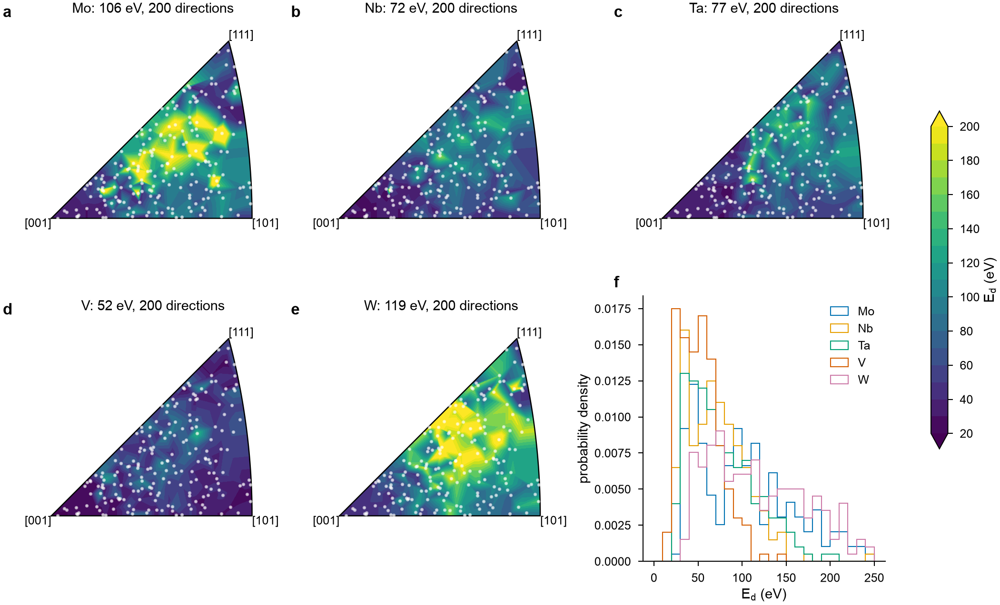
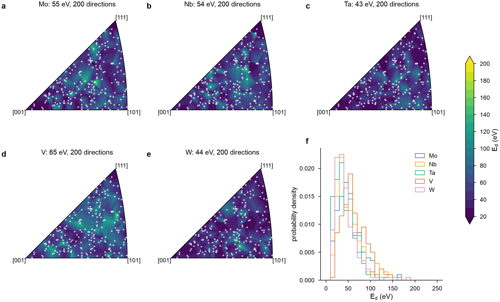
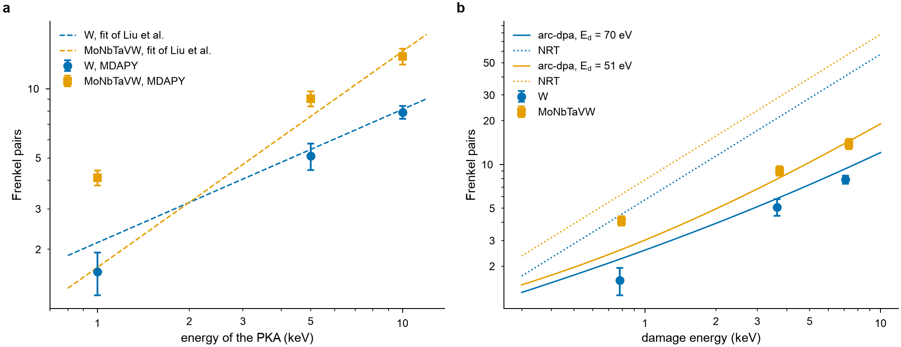

Radiation damage in tungsten and MoNbTaVW¶
A neutron that hits a crystal knocks an atom out of its place, the primary knock-on atom (PKA). Below some tens of eV the atom falls back; above the threshold displacement energy it leaves a vacancy and an interstitial behind, a Frenkel pair. At kiloelectronvolts it knocks others out in turn, a cascade that melts a small region for a few picoseconds and leaves a few of its defects as it cools. Tungsten is the armour of fusion reactors; the equiatomic MoNbTaVW alloy, a high-entropy alloy of the same bcc lattice, is a candidate that may stand radiation better.
This page follows Liu et al. (2025) with their machine-learned potential: the threshold displacement energies of the five pure metals and of each element in the alloy over all directions, their Figures 3 and 4, and the Frenkel pairs that cascades of 1, 5 and 10 keV leave in tungsten and in the alloy, against the NRT and arc-dpa models.
The model
Liu et al. trained a NEP model of Mo, Nb, Ta, V and W on DFT, with a ZBL repulsion at
short range for the close collisions of cascades. It is published under the AGPL-3.0 in
GPUMD-Wizard, from where the
scripts here download it; MDAPY does not ship it. The molecular dynamics run in
MDAPY with the NEP on a GPU, device="cuda".
The crystal at 300 K¶
import urllib.request
import numpy as np
from mdapy.build import build_crystal
from mdapy.calculators import NEP
from mdapy.simulation import MolecularDynamics
URL = ("https://raw.githubusercontent.com/Jonsnow-willow/GPUMD-Wizard/main/tutorials/"
"Calculatiing_Material_Properties/MoNbTaVW/potentials/nep.txt") # fmt: skip
urllib.request.urlretrieve(URL, "nep_monbtavw.txt")
gpu = NEP("nep_monbtavw.txt", device="cuda")
def relaxed(cells, alloy=True, seed=0):
"""The random equiatomic alloy (or tungsten) of the bcc cells given, 10 ps at
300 K and zero pressure; its mean lattice constant."""
crystal = build_crystal("bcc", 3.18, elements="W", repeat=cells)
if alloy:
kinds = np.resize(np.array(["Mo", "Nb", "Ta", "V", "W"]), len(crystal))
np.random.default_rng(seed).shuffle(kinds)
crystal = crystal.with_columns(element=kinds)
with MolecularDynamics(crystal, gpu, timestep=0.001) as md:
md.velocities(600, seed=seed + 1) # half of it goes into the potential energy
md.run(10000, ensemble="npt", temperature=300, pressure=0.0) # 10 ps
warm = md.system
return warm, (warm.box.volume / np.prod(cells)) ** (1 / 3)
warm, a = relaxed((12, 13, 14)) # 4368 atoms
The knock-on atom¶
A few lines give one atom an energy along a direction, and pick an atom of an element near the center of the box:
from mdapy import units
from mdapy.elements import atomic_masses
def knock_on(system, energy, direction, atom):
"""The system with one atom given a kinetic energy in eV along a direction."""
mass = atomic_masses([system["element"][atom]])[0]
unit = np.asarray(direction, dtype=float) / np.linalg.norm(direction)
speed = np.sqrt(2 * energy / (mass * units.AMU_A2_PER_PS2_TO_EV)) # Å/ps
velocities = system["velocities"].copy()
velocities[atom] = speed * unit
return system.with_columns(velocities=velocities)
def central(system, element, count=400):
"""The atoms of an element among the count nearest the center of the box."""
center = system.box.origin + system.box.matrix.sum(axis=0) / 2
near = np.argsort(np.linalg.norm(system["positions"] - center, axis=1))[:count]
return near[np.asarray(system["element"])[near] == element]
Threshold displacement energies¶
The threshold displacement energy E_d of a direction is the least energy of a PKA along it that leaves a stable Frenkel pair. It changes much with the direction: along the close-packed rows a PKA pushes its neighbor on and a chain of replacements carries the interstitial away from the vacancy, while other directions have to break through a wall of atoms. The protocol of Liu et al.:
- the crystal above, 12 × 13 × 14 bcc cells, at 300 K;
- a PKA among the atoms nearest the center, in the alloy of the element studied, along a random direction;
- 6 ps at constant energy, the atoms within a lattice constant of the faces of the box
kept at 300 K by a
Langevinbath, the time step adapting to the fastest atom, no electronic stopping; - a pair is stable when the Wigner–Seitz analysis against the perfect crystal still finds a vacancy at the end; E_d is 1 eV below the least energy that leaves one.
Liu et al. raise the energy in steps of 2 eV. To save runs, the energy here climbs from 20 eV in steps of 10 eV, and the last step is searched again in steps of 2 eV:
from mdapy.analysis import WignerSeitz
from mdapy.simulation.controls import AdaptiveTimestep, Langevin
perfect = build_crystal("bcc", a, elements="W", repeat=(12, 13, 14))
sites = WignerSeitz(perfect.with_columns(element=np.asarray(warm["element"])))
L = warm.box.lengths
inside = warm.box.to_fractional(warm["positions"]) * L
border = ~((inside > a) & (inside < L - a)).all(axis=1)
def stays(energy, atom, direction, seed):
"""Whether a PKA of energy eV leaves a Frenkel pair after 6 ps."""
controls = [
AdaptiveTimestep(0.015),
Langevin(border, 300.0, damping=0.1, seed=seed),
]
shot = knock_on(warm, energy, direction, atom)
with MolecularDynamics(shot, gpu, timestep=0.001) as md:
for frame in md.iterate(
10_000_000, ensemble="nve", save_every=500, controls=controls
):
if frame.info["time"] >= 6.0:
break
last = md.system
return sites.compute(last).vacancy_count > 0
def threshold(atom, direction, seed):
"""E_d of a direction: 10 eV steps from 20 eV, the last one again by 2 eV."""
low, energy = None, 20.0
while not stays(energy, atom, direction, seed):
low, energy = energy, energy + 10.0
if low is not None:
for e in (low + 2.0, low + 4.0, low + 6.0, low + 8.0):
if stays(e, atom, direction, seed):
return e - 1.0
return energy - 1.0
A run of 6 ps of 4368 atoms takes about 20 s on a V100; a direction takes 10 to 40 runs. The 2000 directions of this page took 18098 runs, 47 GPU-hours with eight runs sharing each GPU.
The pure metals¶

Figure 3 of Liu et al.: E_d of each direction computed, reduced to the standard triangle [001]–[101]–[111] by the symmetry of the cubic crystal and drawn in stereographic projection, interpolated linearly between the directions (white dots); f, the distributions.
The thresholds of each metal, the mean with its standard error, against the means of Table 2 of Liu et al.:
| PKA | Directions | Mean E_d (eV) | Median | Least | Most | Liu et al. |
|---|---|---|---|---|---|---|
| Mo | 200 | 106 ± 4 | 99 | 29 | 301 | 99 |
| Nb | 200 | 72 ± 2 | 69 | 25 | 241 | 70 |
| Ta | 200 | 77 ± 3 | 69 | 27 | 205 | 77 |
| V | 200 | 52 ± 2 | 51 | 19 | 141 | 54 |
| W | 200 | 119 ± 4 | 110 | 39 | 251 | 109 |
- The order is that of Liu et al.: tungsten and molybdenum hold their atoms the hardest, vanadium the least. The means of niobium, tantalum and vanadium are theirs within the error; those of tungsten and molybdenum lie 10 and 7 eV above, about two standard errors.
- The maps have the pattern of the bcc metals: the lowest thresholds near ⟨100⟩ and ⟨111⟩, the rows of atoms along which a chain of replacements carries the interstitial away from its vacancy, the highest inside the triangle towards ⟨110⟩, where the PKA meets a wall of neighbors. Tungsten and molybdenum have the widest such region, vanadium hardly any.
- The search is the reason for the higher means of tungsten and molybdenum: at 300 K each run is a draw, and near the threshold a pair stays in some runs and not in others. Climbing by 2 eV from the start tries every energy below the threshold; the steps of 10 eV here skip most of them, and the chance to catch a pair below it. The metals whose thresholds are the highest and the most spread lose the most.
The alloy¶

Figure 4 of Liu et al.: E_d of the PKAs of each element in the random equiatomic alloy.
The thresholds of the PKAs of each element in the alloy, against the values Liu et al. give in their text:
| PKA | Directions | Mean E_d (eV) | Median | Least | Most | Liu et al. |
|---|---|---|---|---|---|---|
| Mo | 200 | 55 ± 2 | 49 | 19 | 181 | 54 |
| Nb | 200 | 54 ± 2 | 47 | 19 | 159 | 53 |
| Ta | 200 | 43 ± 2 | 37 | 19 | 111 | 45 |
| V | 200 | 65 ± 2 | 59 | 19 | 161 | 58 |
| W | 200 | 44 ± 2 | 39 | 19 | 183 | 45 |
- Every element but vanadium is displaced more easily in the alloy than in its own metal: tungsten at 44 eV against 119, tantalum at 43 against 77. Over the five, 52 eV, against 51 eV in Table 2 of Liu et al.
- The maps lose the pattern of the pure metals: the random neighbors break the rows that carry replacements in a crystal of one element, and the walls with them, so that the thresholds are low and alike in every direction.
- Vanadium, the lightest of the five, is the exception, 65 eV against 52 in vanadium and 58 in Liu et al.: it passes less of its energy to heavier neighbors.
- 7 % of the directions of the alloy show 19 eV: the search starts at 20 eV, so 19 stands for a threshold of 20 eV or less, and the means are a little high for it.
Cascades¶
The protocol of Liu et al., for 1, 5 and 10 keV:
- 50 × 50 × 50 bcc cells, 250 000 atoms, 16 nm wide, relaxed for 10 ps at 300 K and zero pressure; the alloy relaxed once, its runs differing by their PKA;
- a PKA near the center along a ⟨135⟩ direction, its order and signs varied from run to run, away from the open channels of the lattice; in the alloy each element in turn;
- 50 ps at constant energy, the atoms within 3 lattice constants of the faces at 300 K;
- electronic stopping as a friction on the atoms above 10 eV, of Lindhard and Scharff (1961) for each element in the alloy by Bragg's rule (electronic stopping);
- an adaptive time step of at most 0.015 Å and 1 fs;
- the Frenkel pairs by Wigner–Seitz every picosecond, and at the end the clusters of defects: vacancies within 1.2 a of each other (between the second and third neighbors), interstitials within 1.55 a (between the third and fourth).
from mdapy.analysis import ClusterAnalysis
from mdapy.elements import atomic_numbers
from mdapy.simulation.controls import ElectronicStopping
def stopping(system, elements, energy):
"""The electronic stopping power (eV/Å) of each element against its energy, of
Lindhard and Scharff in the target by Bragg's rule."""
e2, bohr, v0 = 14.399645, 0.529177, 21876.9 # eV Å, Å, Å/ps
density = len(system) / system.box.volume
names = np.asarray(system["element"])
fractions = {el: float(np.mean(names == el)) for el in elements}
grid = np.geomspace(1.0, 2.0 * energy, 200)
table = {}
for el in elements:
z1, m1 = atomic_numbers([el])[0], atomic_masses([el])[0]
k = sum(c * 8 * np.pi * e2 * bohr * z1 ** (7 / 6) * atomic_numbers([t])[0]
/ (z1 ** (2 / 3) + atomic_numbers([t])[0] ** (2 / 3)) ** 1.5
for t, c in fractions.items()) # fmt: skip
speeds = np.sqrt(2 * grid / (m1 * units.AMU_A2_PER_PS2_TO_EV))
table[el] = (grid, density * k * speeds / v0)
return table
big, a = relaxed((50, 50, 50)) # 250 000 atoms
perfect = build_crystal("bcc", a, elements="W", repeat=(50, 50, 50))
sites = WignerSeitz(perfect.with_columns(element=np.asarray(big["element"])))
pka = int(central(big, "Ta", 200)[0]) # a PKA of tantalum, 5 keV along [1 3 5]
shot = knock_on(big, 5000.0, (1, 3, 5), pka)
L = shot.box.lengths
inside = shot.box.to_fractional(shot["positions"]) * L
core = ((inside > 3 * a) & (inside < L - 3 * a)).all(axis=1)
controls = [
AdaptiveTimestep(0.015),
Langevin(~core, 300.0, damping=0.1, seed=1),
ElectronicStopping(
stopping(shot, ["Mo", "Nb", "Ta", "V", "W"], 5000.0), min_energy=10.0
),
]
pairs = []
with MolecularDynamics(shot, gpu, timestep=0.001) as md:
for frame in md.iterate(
10_000_000, ensemble="nve", save_every=1000, controls=controls
):
pairs.append(sites.compute(frame).vacancy_count) # about every picosecond
if frame.info["time"] >= 50.0:
break
damage = 5000.0 - md.thermo["electronic_loss"][-1] # the damage energy, eV
A cascade of 5 keV takes about 19 minutes on one GPU, the relaxation of the crystal included.
The Frenkel pairs against the energy¶
The NRT model (Norgett, Robinson and Torrens 1975) counts 0.8 T_d / (2 E_d) pairs for a damage energy T_d, the energy of the PKA less what the electrons take. Most of the atoms a cascade knocks out fall back as it cools, and the arc-dpa model of Nordlund et al. (2018) scales it by ξ = (1 − c) (2 E_d / 0.8)^−b T_d^b + c: for tungsten E_d = 70 eV, b = −0.56 and c = 0.12 of Nordlund et al.; for the alloy b = −0.73 and c = 0.21 of Liu et al., with E_d = 51 eV, the mean threshold displacement energy of the alloy in their Table 2. The paper does not say which E_d its fit takes; with this one the model follows their cascades from 5 keV on, while the effective threshold of 108 eV that they also give for alloys puts it a factor of two below them.

a: the Frenkel pairs left after 50 ps, the mean and its standard error over the runs, against the energy of the PKA, with the power laws Liu et al. fitted to their cascades of 1 to 150 keV. b: against the damage energy, with the NRT and arc-dpa models.
The runs of each energy, their mean damage energy, the Frenkel pairs left after 50 ps (the mean and its standard error), the most at the peak of the cascade, and the shares of the vacancies and of the interstitials in clusters of two or more:
| Material | E_PKA (keV) | Runs | T_d (keV) | Frenkel pairs | Peak | Vacancies in clusters | Interstitials in clusters |
|---|---|---|---|---|---|---|---|
| MoNbTaVW | 1 | 20 | 0.79 | 4.1 ± 0.3 | 41 | 34 % | 14 % |
| MoNbTaVW | 5 | 20 | 3.73 | 9.1 ± 0.7 | 406 | 36 % | 13 % |
| MoNbTaVW | 10 | 20 | 7.35 | 13.8 ± 1.1 | 1128 | 45 % | 18 % |
| W | 1 | 10 | 0.78 | 1.6 ± 0.3 | 9 | 8 % | 27 % |
| W | 5 | 10 | 3.63 | 5.1 ± 0.7 | 135 | 13 % | 57 % |
| W | 10 | 10 | 7.09 | 7.9 ± 0.5 | 403 | 10 % | 54 % |
- Tungsten follows the power law of Liu et al. within one standard error at 5 and 10 keV and two at 1 keV; arc-dpa, whose parameters Nordlund et al. fitted to other potentials, lies 10 to 20 % above. Of the hundreds of pairs at the peak (135 at 5 keV, 400 at 10 keV), all but 5 to 8 recombine as the cascade cools.
- The alloy keeps more Frenkel pairs than tungsten at every energy, 1.7 to 2.6 times as many, as Liu et al. find over 1 to 150 keV; its peak is three times that of tungsten. At 5 and 10 keV the pairs lie on Liu et al.'s power law; at 1 keV there are 4.1 where their law, a fit from 1 to 150 keV, gives 1.7: near the threshold, where the alloy's thresholds, half those of tungsten, count most.
- The defects cluster differently: in tungsten half of the interstitials sit in clusters at 5 and 10 keV, and a tenth of the vacancies; in the alloy a third to nearly a half of the vacancies and a sixth of the interstitials. Liu et al. find the same: fewer clustered interstitials in the alloy, under a quarter, and more clustered vacancies.
- The damage energies, from the stopping of Lindhard and Scharff, are 0.78, 3.6 and 7.1 keV in tungsten (Liu et al., from SRIM: 0.77, 3.9 and 7.7) and 0.79, 3.7 and 7.4 keV in the alloy (0.84, 4.2 and 8.4).
Running it¶
The four scripts that made this page run the protocols above on one GPU each:
tde.pyMATERIAL ELEMENT COUNT SEED out.json, the threshold displacement energies ofCOUNTrandom directions;cascade.pyMATERIAL ENERGY RUN out.json, one cascade;tde_figures.pyandcascade_figures.py, the figures and the tables from their results.
The thresholds of this page took about 47 GPU-hours, the 90 cascades about 30, 20 minutes each, on V100, A100, H100 and H200 GPUs of the Triton cluster of Aalto University.
See also¶
- Wigner–Seitz analysis and clusters.
- Molecular dynamics, adaptive time step, groups and controls and on the GPU.
Please cite
The potential and the protocols: Liu et al. (2025); arc-dpa: Nordlund et al. (2018).